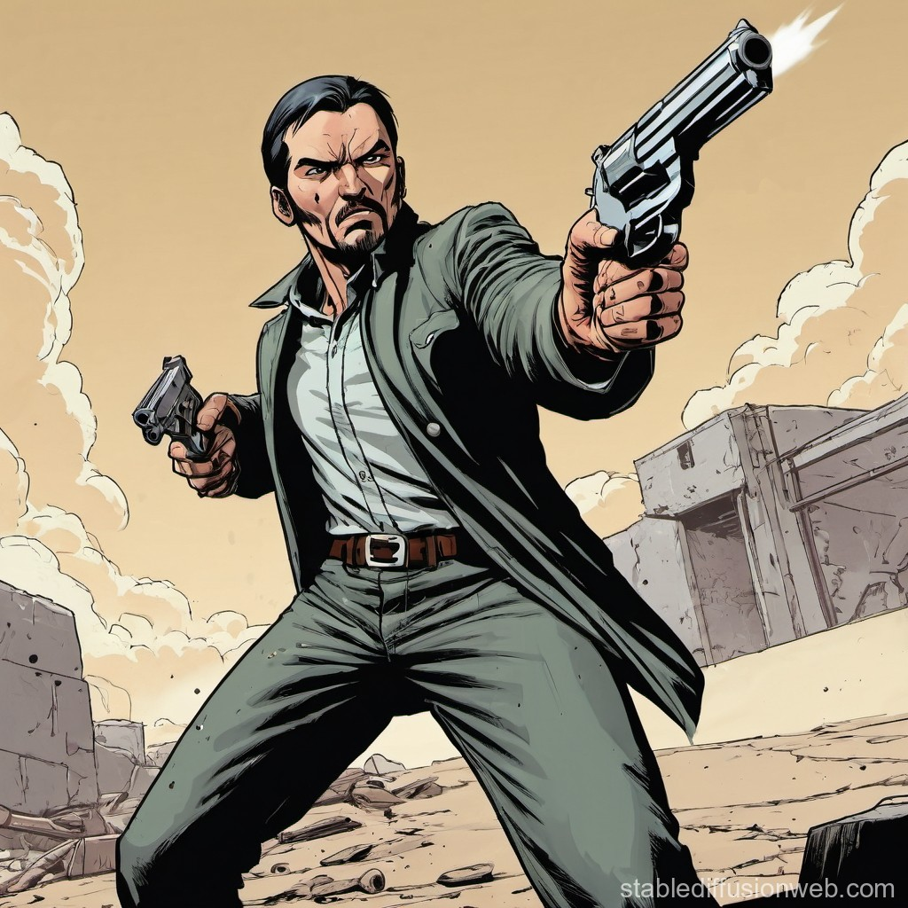
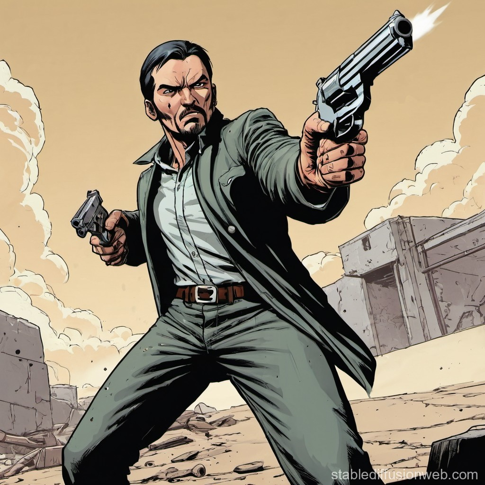

JJM Venter Portfolio:
 


Summary:
My unique attribute is determination. I take on every challenge head on
and do what I need to accomplish my goals, even when the challenge is
difficult. Every time I was given a new challenge at my previous and
current job, whether it was leading my first team project or meeting a
quick deadline, I always enjoyed stepping up and demonstrating my skill at
that new task. If you are looking for someone who enjoys a challenge and
operate well under pressure, then I know that is me.
Education:
-
Grade 12 Matriculated 1997 at Pretoria Technical High school N3
electric.
- Prefect Head of house John Orr
- Honours colors for rugby
Work Experience:
- Makone Corporate Solutions
- Thor Projects and Designs
-
Barra Reef Divers
-
Groenkloof East Butchery
Other Qualifications:
-
Pilots License:
Private Pilot License
Night Rating
-
Diving Qualification:
Master scuba diver trainer
Open water scuba instructor
Dive master
- Emergency First Aid:
Emergency First Aid Instructor
Primary and Secondary Care For Children Instructor
- Skipper License:
SAMSA Accredited South African Small Craft Association
- Knife Making Academy:
Basic Fix Blade Course
Basic Folder Course
Basic Damascus Knife Making
- Advance Fire Arm Instructor:
Handgun
Self-Loading Rifles
Shotgun
Manually Loading Rifles
- Assessor
- PISIRA Training:
Grade A
Grade B
Grade C
Grade D
Grade E
Projects Worked On:
- Astron Energy Refinery
- Old Mutual Head Office Cape Town
- Astron Energy Sites
- Nissan DRC
- KFCs
- Hollard Head Office Johannesburg
- Liberty Life
- Stutafords
- Forty Oil Nigeria
- STA Travels
- Inospace
- Pizza Hut